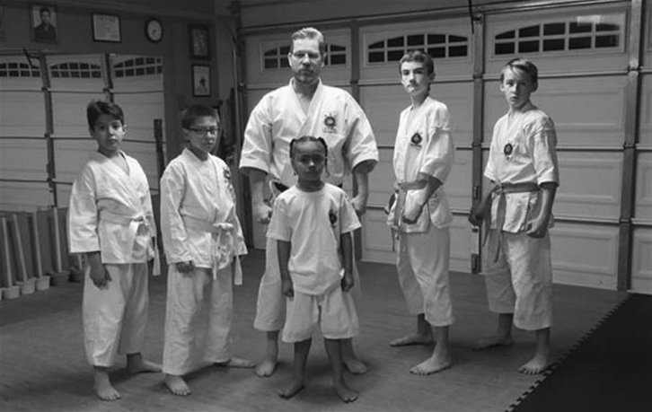

Okinawan Goju-Ryu Karate & Ryukyu Kobudo
Redlands Traditional Martial Arts is a traditional, non-commercial dojo focusing on Okinawan Goju-Ryu Karate and Kobudo, and home of the Dōshūkan family.
Dōshūkan (道修館) is a school built on sweat, repetition, and the pursuit of self-improvement through the martial way. Our philosophy is in the name: karate-dō is a path to lifelong growth, and mastery is something we always seek but never finish.
The dojo is located at the private residence of Sensei Doug Walker, and we accept a very limited number of students. If you would like to set up an introduction to learn more about our program, please get in touch.

Goju-Ryu Karate
Hard and soft technique together: strikes and kicks, circular blocks, locks, throws, and an emphasis on correct breathing. About the program
Ryukyu Kobudo
The classical weapons traditions of Okinawa, from the bo and sai to the kama and tinbe-rochin. About Kobudo